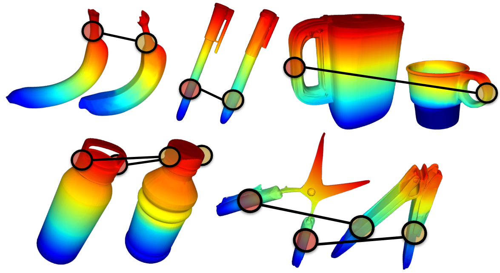
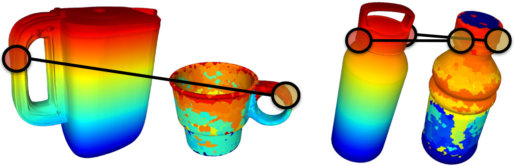

From one demonstration to a novel object
Five kinesthetically demonstrated skills — peeling, opening, pouring, twisting, and cutting — are transferred zero‑shot to unseen target objects using only the computed dense correspondence. A contact keyframe (end‑effector pose + contact region) and relative motion segments are transferred via Procrustes alignment to the corresponding region on the target.

| Task | D3Fields | SemAnCorr |
|---|---|---|
| Task 1: Banana Peeling | 7/10 | 8/10 |
| Task 2: Pen Cap Opening | 9/10 | 9/10 |
| Task 3: Kettle Pouring | 3/10 | 7/10 |
| Task 4: Bottle Twisting | 1/10 | 7/10 |
| Task 5: Scissor Cutting | 3/10 | 6/10 |
Real‑world task success rate, 10 trials per task with varied object pose and viewpoint.

SemAnCorr correspondence on real‑world object pairs, Tasks 1–5.

D3Fields fails on Tasks 3 & 4: spatially incoherent correspondence yields incorrect local frames, causing task failure.
Both methods perform comparably on simpler tasks where the correct interaction region is relatively unambiguous. On tasks that additionally require preserving a local geometric frame — approach direction, end‑effector orientation — D3Fields' spatially incoherent correspondence produces erroneous frames despite often identifying the correct semantic region. SemAnCorr's remaining failures stem mainly from mesh‑to‑workspace alignment error rather than correspondence estimation.